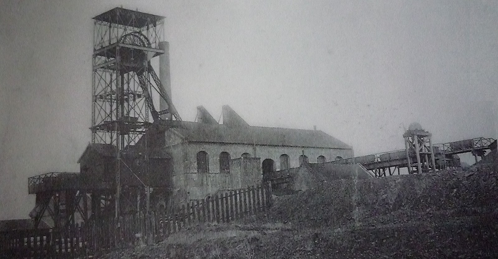
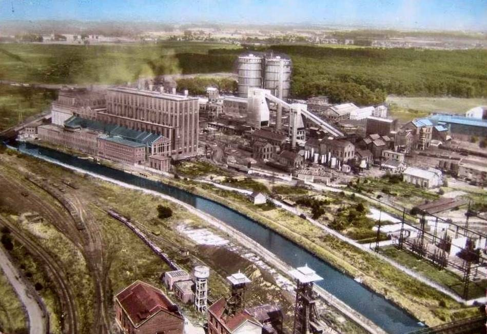

-
IXe siècle
Le village porte déjà le nom de Sanctus Salvius. site de la Ville
-
870
Un traité conclu à Meerssen mentionne l'abbaye du village. Wikipédia
-
1103
L'abbaye passe sous l'autorité de Cluny et prend le rang de prieuré. Wikipédia
-
1678
Par le traité de Nimègue, le village devient français pour de bon, un an après la prise de Valenciennes par Louis XIV. site de la Ville
-
1699
Un dénombrement compte 363 personnes dans ce qui reste alors un petit village. site de la Ville
-
1770
Ouverture de la fosse Sainte-Augustine, qu'on appelle aussi fosse du Roleur. L'eau la fera abandonner, et encore une fois après sa réouverture en 1837. Wikipédia
-
1777
Naissance de Joséphine Duchesnois, le 5 juin. Elle fera carrière sur scène comme tragédienne, surtout chez Racine. Wikipédia
-
1810
Un décret de l'Empire, le 22 juin, confie à la Compagnie d'Anzin la houille du sous-sol de la commune. Wikipédia
-
1821
La commune dépasse le millier d'habitants : 1 076. site de la Ville
-
1835
Ouverture de la fosse Petit. Ses veines décevantes la font fermer dès 1842. Wikipédia
-
1842
Le chemin de fer vers Quiévrain arrive. Pendant un an, il démarre ici, car les remparts de Valenciennes lui barrent encore la route. site de la Ville
-
1852
La terre domine : 59 fermes, et 1 100 hectares cultivés sur 1 204. Les maraîchers vendent à Valenciennes, et les habitants gagnent le surnom de Choux rouges. site de la Ville
-
1856
Début du creusement de la fosse Thiers, au bord de l'Escaut. Le charbon en sort à partir de 1860. Wikipédia

La fosse Thiers, à Saint-SaulveCarte postale vers 1900, F. Lesieur éditeur. Domaine public. Wikimedia Commons -
1857
Édouard Hamoir, futur maire de la commune, se fait bâtir le château de la Rougeville, au bord de l'Escaut. site de la Ville
-
1863
Le même Édouard Hamoir paie de sa poche une nouvelle église, terminée en 1865. site de la Ville
-
1903
La commune compte 3 250 habitants. site de la Ville
-
1904
Le 16 décembre, l'ingénieur en chef des Mines arrête les travaux de la Compagnie de Marly, dont les fosses ne sont pas reliées. Elle s'arrête là. Wikipédia

La fosse de Saint-Saulve vers 1900Carte postale vers 1900, auteur inconnu. Domaine public. Wikimedia Commons -
1916
Le maire Victor Hornez est arrêté en novembre. Il dénonçait le sort des ouvriers réquisitionnés. Il ne sort de détention qu'à la fin de la guerre. site de la Ville
-
1918
La guerre s'achève. Elle a tué 105 soldats et 28 civils de la commune. site de la Ville
-
1919
La fosse Thiers, détruite pendant la guerre, est relevée. Une cokerie et une centrale s'installent tout près. Wikipédia
-
1944
Fin août, à la veille de la Libération, les Allemands fusillent 21 résistants au champ de tir du Rôleur. site de la Ville
-
1954
Début du chantier de l'église du Carmel, dessinée par Pierre Szekely, sculpteur, et Claude Guislain, architecte. Il dure jusqu'en 1966. base Pop du ministère de la Culture
-
1955
Fin de l'extraction à la fosse Thiers, après 14 540 000 tonnes de houille. Wikipédia

La fosse Thiers et la centrale vers 1949Charbonnages de France, CC BY 1.0 (licence). Wikimedia Commons -
1958
La barre des 5 000 habitants est franchie, avec 5 300 personnes. site de la Ville
-
1971
La zone industrielle n°4 naît pour accueillir l'usine de tubes Vallourec. site de la Ville
-
1972
L'ouverture de l'autoroute met fin au fort trafic de la route nationale 30, l'ancien pavé de Valenciennes à Mons. site de la Ville
-
1973
Un incendie ravage le couvent des Ursulines, dont seul le portail tient encore debout. Wikipédia
-
1976
Le canal à grand gabarit dessert la zone industrielle, trois ans après le port fluvial, ouvert en 1973. site de la Ville
-
1986
Comblement de l'ancienne carrière de craie sur laquelle s'étend le parc du Rôleur. site de la Ville
-
1991
L'Espace Athéna s'élève là où se trouvait l'ancienne église Saint-Martin, démolie en 1866. site de la Ville
-
1993
Depuis cette année-là, le festival À travers chants fait vivre la chanson française chaque mois de mars. Wikipédia
-
2002
L'église du Carmel entre à l'inventaire des monuments historiques, le 7 mai. base Pop du ministère de la Culture
-
2018
Le parc du Rôleur s'équipe : jeux pour les enfants, appareils de fitness et circuits de course. site de la Ville
-
2025
Le service Culture de la Ville lance un parcours patrimoine, avec une vingtaine de panneaux à découvrir dans l'ordre qu'on veut. site de la Ville
.jpg){kind=link}


Chaque date renvoie à sa source. Une erreur ou un souvenir à partager ? Écrivez à la page Facebook.